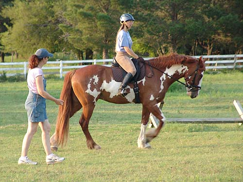
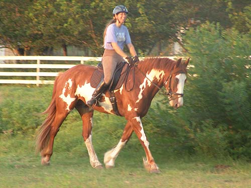
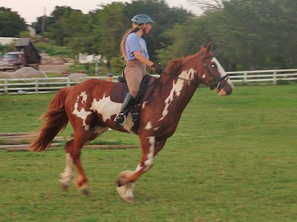

Nero in a dressage
lesson I haven't had a lesson in quite a while.
I don't think
I've ever had one on Nero, so this was
very useful. I'd
forgotten how exhausting riding with my
trainer was, but we
got a lot of good work and I know what
I need to work on.
First without stirrups. Not something
I normally feel comfortable doing.
Nero's really nice, but I've still
got a lot of nerves to deal with.
Working on forward, now that I had
my stirrups.
It's easy to start nagging him. I
might try spurs. Maybe then I could just ask once and wait.

He's really tons more forward than
when we first started riding him. Now my trainer wants him forward and
soft.
He's pleasant enough, but not soft
to the bit.
It's just nicer when he is flexing.
My left foot was having trouble
this day. Usually it's might right, so I'm not sure what was going on.
I love how he is here. We could get
maybe 1/2 a circle of this, before he'd go above or behind the bit. It's
not easy for him to use his muscles like this, since he's just starting
to learn what we want.
It always helps if I remember
to lift and open my shoulders. We feed off each other for our balance.
A lot of circles just for 1/2 a circle
of steady.
Nero was happy for a break.
The only thing I requested was that
he stay forward.

Back to the trot and he came together
a little easier.
We've trailered out to do a little
jumping, but here my trainer just wanted to give him something else to
focus on between the trot circles.
I like taking him over trot poles.
He's very floaty and careful.
Working hard to get the canter.

First the wrong lead (when my friend
comes to ride, she doesn't get the wrong lead, and they've even gotten
the correct one on the long side), but I was just happy to get the canter.
Then the correct lead, but not very
pretty.
Much better to the right.
And a nicely forward and correct trot,
after the canter work.